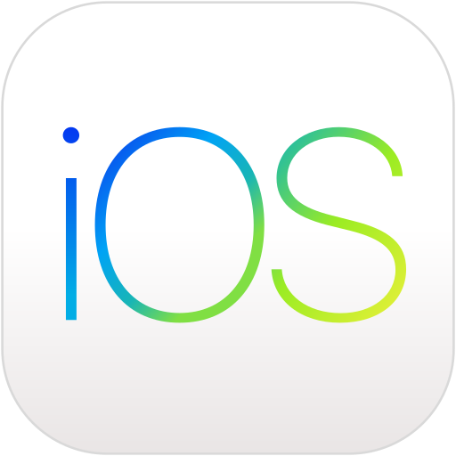

Sistemas Operativos Móviles
TRABAJO DE INVESTIGACIÓN
TRABAJO DE INVESTIGACIÓN
El debate sobre cuál es mejor, Android o iOS, ha sido un tema recurrente entre usuarios y expertos en tecnología. Android, desarrollado por Google, destaca por su flexibilidad y personalización. Ofrece una amplia gama de dispositivos de diferentes marcas y precios, lo que lo hace accesible para más personas. Además, su ecosistema es más abierto, permitiendo a los usuarios instalar aplicaciones de diversas fuentes y modificar aspectos del sistema operativo. Sin embargo, esta apertura puede conllevar ciertos riesgos de seguridad y fragmentación, ya que no todos los dispositivos reciben actualizaciones al mismo ritmo.
Por otro lado, iOS, desarrollado por Apple, se caracteriza por su ecosistema cerrado y su optimización. Al estar diseñado específicamente para dispositivos de Apple, ofrece un rendimiento fluido y una integración perfecta con otros productos de la marca. Su enfoque en la privacidad y la seguridad también es un punto fuerte. No obstante, estas ventajas vienen con un costo más elevado y menos posibilidades de personalización. La elección entre ambos sistemas depende, en última instancia, de las prioridades del usuario: flexibilidad y diversidad con Android o estabilidad y exclusividad con iOS.

"Con el paso del tiempo, ambos sistemas han ido convergiendo en propuestas que, si bien siguen siendo muy distintas, cada vez guardan mayores similitudes. Android es un sistema cada vez más pulido, lejos de las inestabilidades y errores del pasado, y completamente a la altura de iOS en soporte. iOS, por su lado, sigue siendo una apuesta segura, muy estable, y con algo más de personalización para que no todo sea puro hermetismo. La decisión sigue siendo puramente personal."(AGUILAR, Ricardo)
La respuesta depende de las necesidades y preferencias individuales. Si valoras la personalización, la variedad de dispositivos y la relación calidad-precio, Android puede ser la opción ideal. Su amplio rango de precios y la posibilidad de adaptar el sistema a tus gustos personales lo hacen atractivo para usuarios que buscan versatilidad. Por otro lado, si priorizas la simplicidad, la integración con otros dispositivos Apple y un enfoque fuerte en la seguridad, iOS es probablemente la mejor elección. La decisión también puede depender de factores como la preferencia por ciertas aplicaciones exclusivas, el soporte técnico y la experiencia de usuario que cada sistema ofrece. En última instancia, tanto Android como iOS tienen sus fortalezas, y la mejor elección será aquella que mejor se alinee con tu estilo de vida y expectativas tecnológicas.
"El duopolio que se manifiesta en la rivalidad entre Android vs. iOS (con excepciones casi anecdóticas) no debe dramatizarse, ya que ambos sistemas son excelentes. Es más: ambos tienen bastante en común, con algunas diferencias importantes que querrás considerar al momento de decidirte por uno de ellos."(MATUS, Daniel)

2. Sistemas Operativos Móviles: ¿Qué son?, Características...